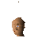

Doctor Orbon

| Config name | doctor_orbon |
| NPC id | 290 |
| Combat level | hidden |
| Options | Talk-to |
| Wander range | 3 tiles from spawn |
| Defined in | scripts/quests/quest_sheepherder/configs/quest_sheepherder.npc |
Doctor Orbon
Seems very serious.
Show all 1 spawn on the world map → Open in knowledge graph →
Locations
| Area | Coordinates | Level | Count | Map |
|---|---|---|---|---|
| East Ardougne | 2614, 3306 | 0 | 1 | view |
Dialogue
PlayerHello.
Doctor OrbonHow do you feel? No heavy flu, shivers, nausea or loss of appetite?
PlayerUh... no... I feel fine...
Doctor OrbonHow about nightmares then? Are you experiencing any problems with especially scary nightmares?
PlayerNo... not since I was young.
Doctor OrbonGood, good, I had to make sure. This plague really has an incredible fast contagion rate. It spreads faster than the common cold!
PlayerThe plague? Tell me more.
Doctor OrbonIt came from the west somewhere. It is extremely quick spreading, and utterly deadly.
PlayerWhat are the symptoms?
Doctor OrbonIt varies slightly from case to case, but usually abnormal nightmares and flu-like symptoms, progressing as you succumb more.
Doctor OrbonEventually it results in the presence of a thick black tar-like substance secreted from the nose and eyes.
Doctor OrbonUnfortunately if you reach this stage of infection then no one can save you.
PlayerOk, I'll be careful.
Doctor OrbonYou do that traveller. You do not want to become infected by the plague.
PlayerHi Doctor.
PlayerI need to acquire some protective clothing so I can dispose of some diseased sheep.
Doctor OrbonProtective clothing? I'm afraid I only have the one suit which I made myself to prevent infection from any contaminated patients I treat.
Doctor OrbonI suppose I could sell you this one and make myself another, but it would cost you at least 100 gold so that I could afford a replacement.
PlayerOk, I'll take it.
PlayerOops, sorry, I don't have enough money.
Doctor OrbonThat's ok. Just don't go near those sheep. When you can find the money come back here.
You give Doctor Orbon 100 coins. He hands over a protective suit.
Doctor OrbonThese should protect you from infection.
PlayerSorry doc, that's too much.
Doctor OrbonI'm afraid it will cost me that much to replace. I cannot possibly sell it for less.
PlayerHello again.
Doctor OrbonDid you dispose of those infected sheep yet?
PlayerNot yet.
Doctor OrbonYou should hurry, they could infect the entire town in a matter of a few days!
Doctor OrbonI notice you do not appear to have your protective clothing with you. Would you care to buy some more? Same price as before.
PlayerNo, I don't need anymore.
Doctor OrbonI suggest you go and retrieve your protective suit then. Trust me, you do not want to be infected.
Doctor OrbonWell hello again. I hear you managed to dispose of those sheep. Good work.
Quests
Referenced in scripts
scripts/quests/quest_sheepherder/scripts/npcs/doctor_orbon.rs2